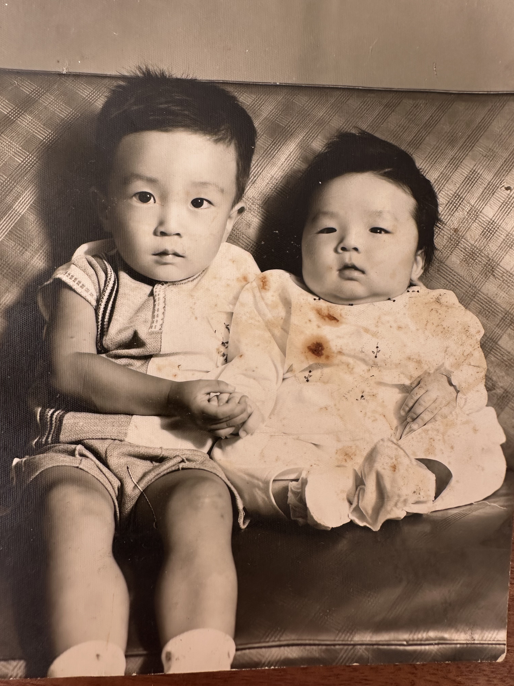
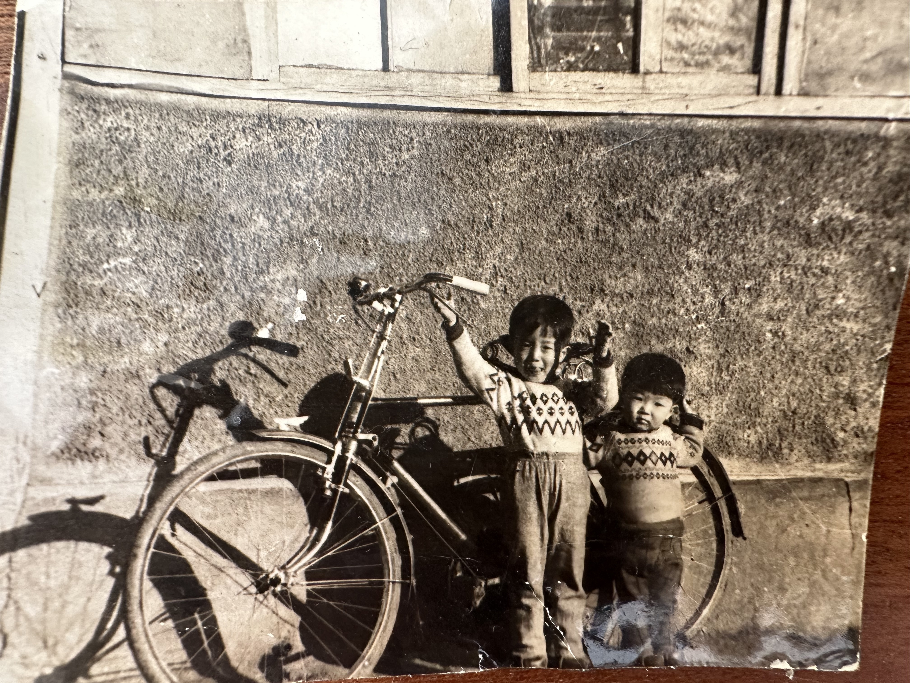
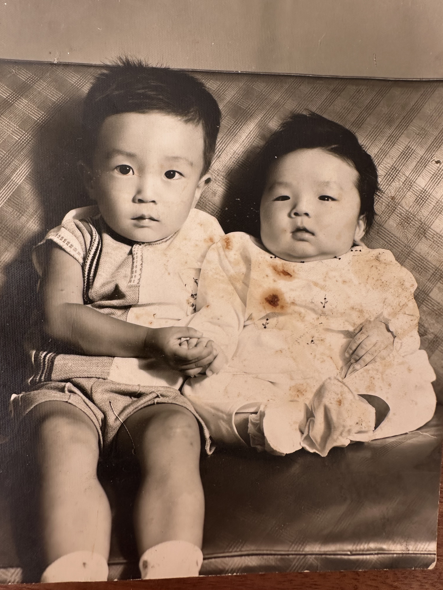
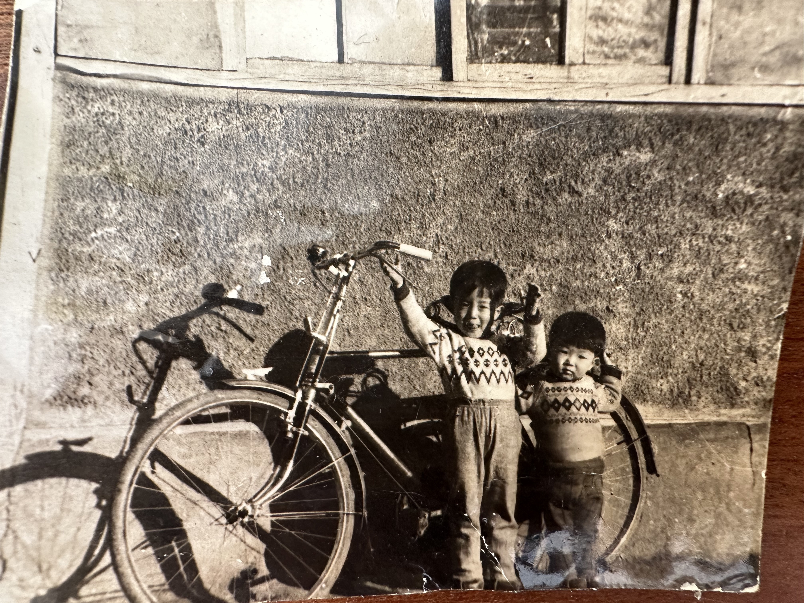

Birthplace of Joseph Song
Hwanghae-do, Pyongyang, North Korea
1922-1944
The true date of my grandfather, Joseph's birthday is not known, some say he was born in 1922 and some say it was 1926. We would celebrate his birthday on December 26th.
He was the oldest of 3 brothers in a family of wealthy, Christian farmers in Hwanghae-do, Pyongyang in what is now North Korea. When Joseph was 13 years old, his father died of appendicitis and he took over the responsibility of being the man of the household.
Around 1944, when the communists began to advance, Joseph was at work as a teacher at the local school. Without any notice, a cousin and Joseph’s middle brother came to his workplace in a stolen ambulance and told Joseph that they needed to leave immediately. The brothers were quickly stowed away in the back of the ambulance and were forced to flee their hometown without the rest of the family. My grandfather was around 18 years of age at the time and had a wife and three children. He left without knowing if they were okay, or if he would ever see them again.


 


